こまお・１０枚落ち攻略
いちばん簡単なパターン
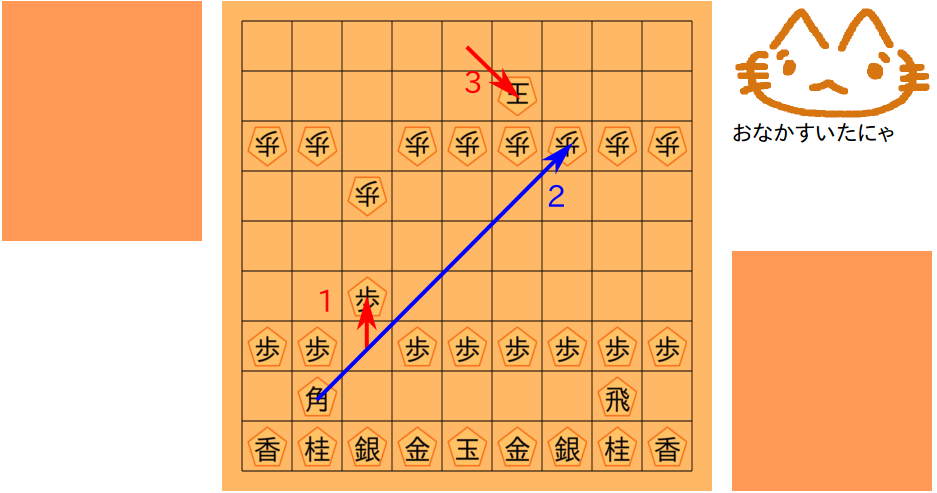
１のように角の右上の歩を進めます
２のように狙っています（実はフェイントです）
だから３のように王が守ってきます
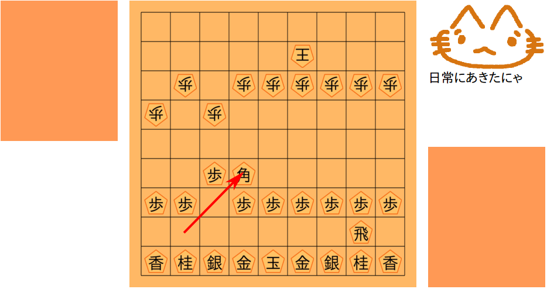
ここに角を進めます
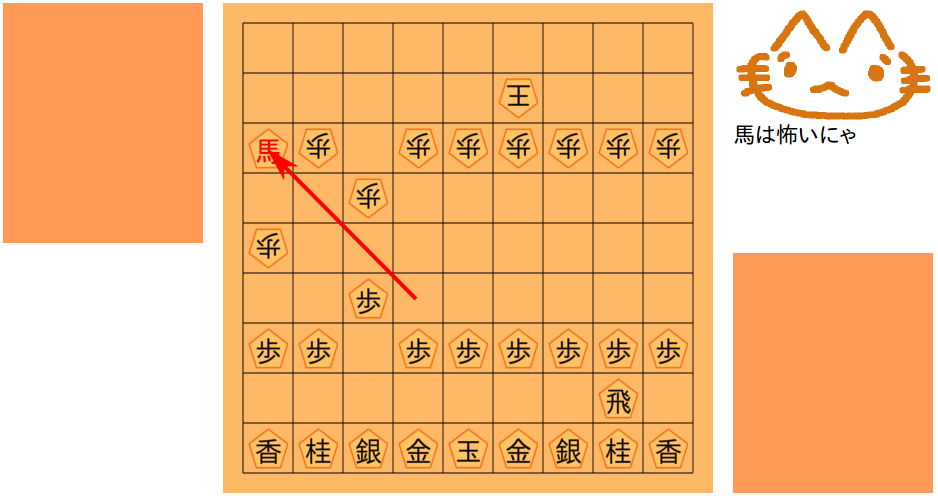
こっちの守りがおろそかになっているはずなので馬を作ります
馬を作ったら下準備の一つ目が完了です
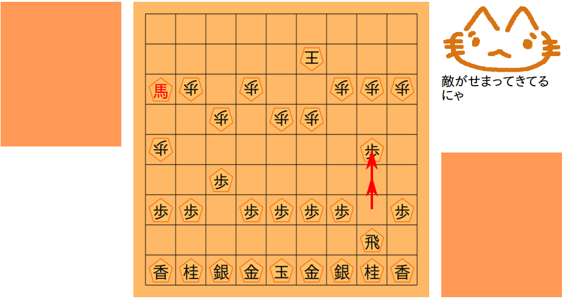
飛車の前の歩を二つ進めます
次の狙いは竜を作ることです
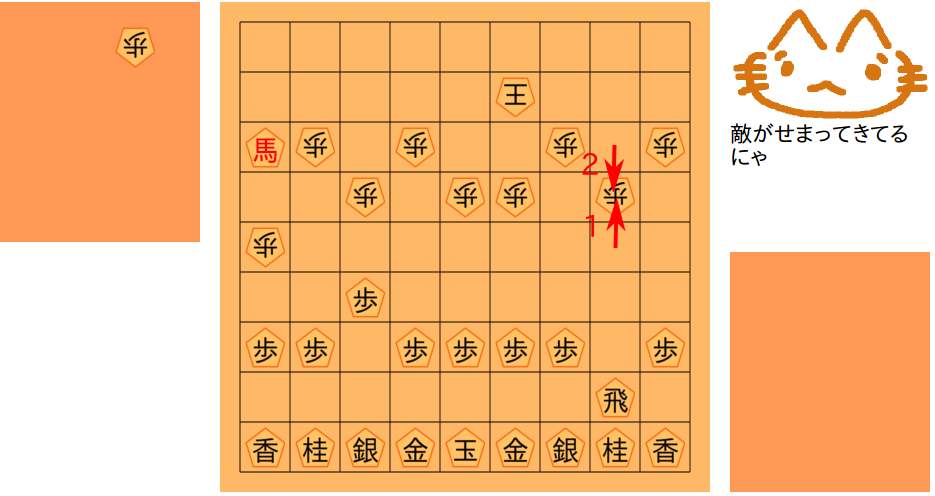
１のようにもう一つ進めます
２のように取り返してきます
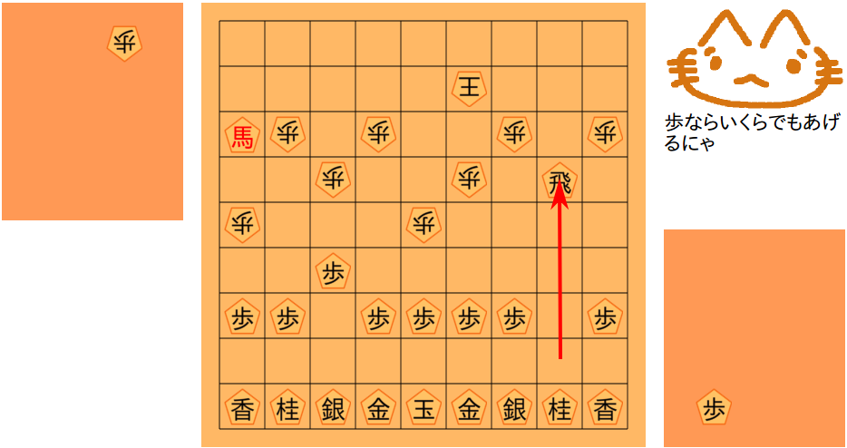
さらに飛車で取り返します
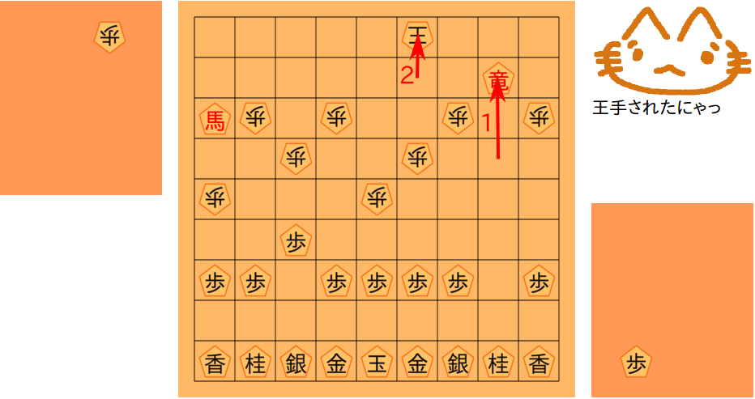
今回は守りががら空きだったので竜を作りつつ王手できました
相手の王が向こう側に逃げてくれました
竜ができたので下準備が完了です
あとは王を追い詰めるだけです
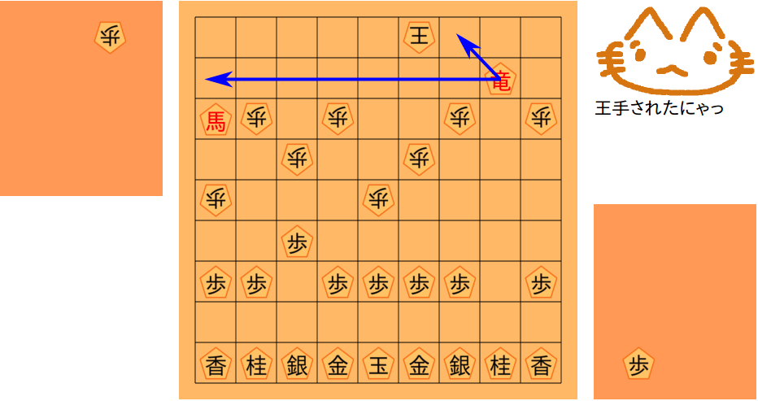
この竜は青い線のところに動けます
つまり相手の王は青い線のところに動けません
この竜はこのまま動かさなくても大活躍なのです
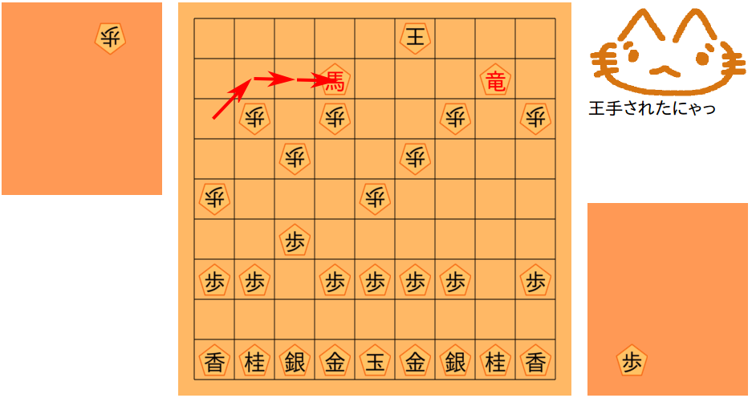
馬を動かして王を追い詰めます
はさみうちです
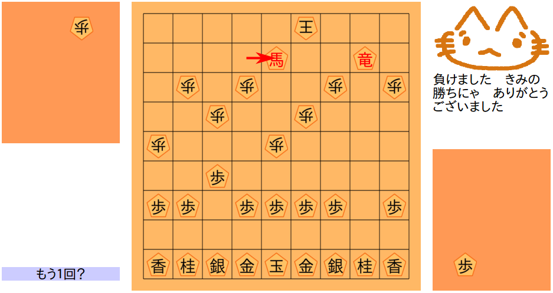
馬を一つ横に動かして勝ちです
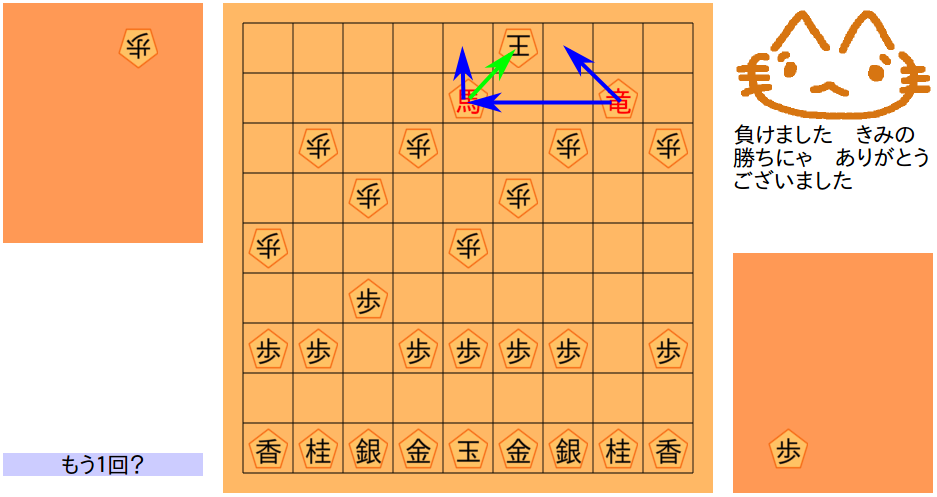
さっきと同じ図です
なぜこれで勝ちなのかというと
緑の線のように王手していて
青い線のように王のまわりを包囲しているからです
もはや王に逃げ場はありません
簡単に竜が作れないパターン
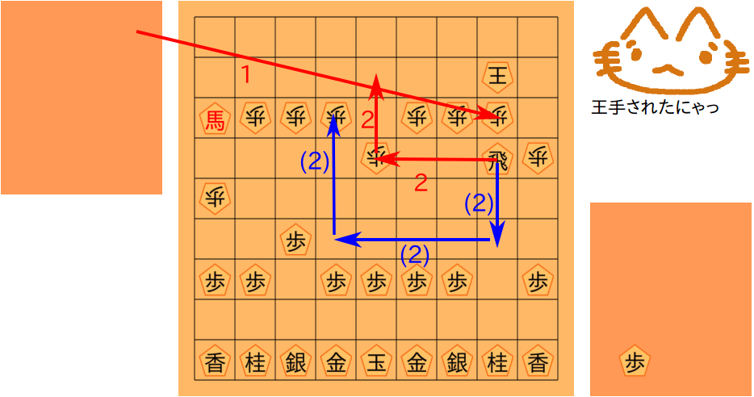
もしも王ががっちり飛車の前の方を守っていて１のように歩を打ったら
２や（２）のようにぐるっと回り込んで竜を作ることを狙います
１０枚落ちのコツはあくまで竜と馬を作ることです
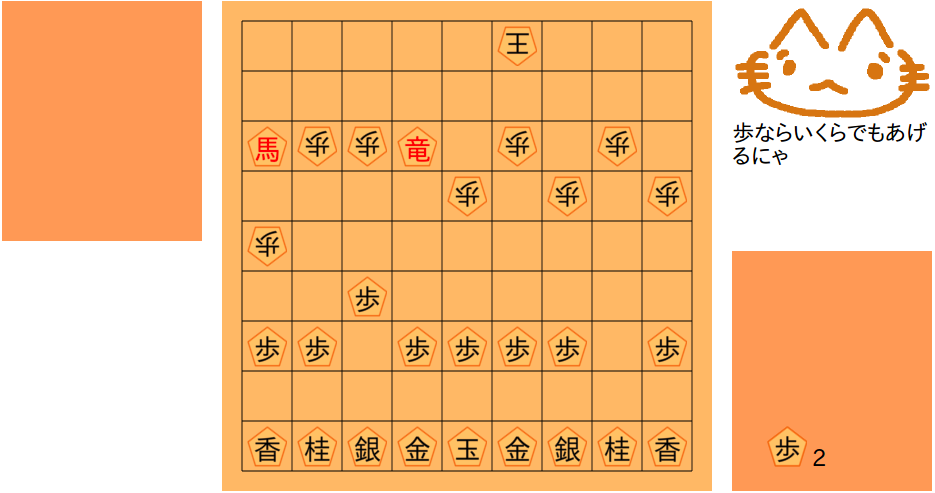
竜ができました
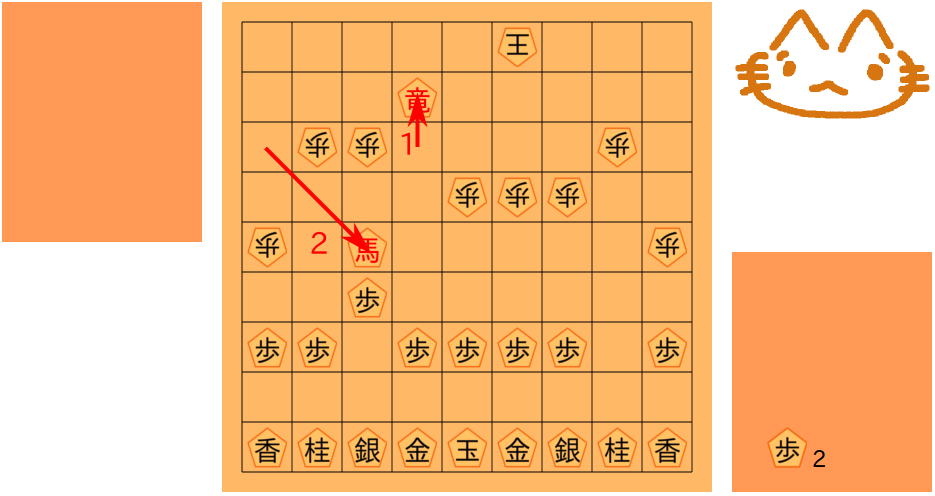
１のように竜で王を動きづらくしておきます
とりあえず２のように馬の活用を狙います
そのあいだ相手は歩を進めたりしています
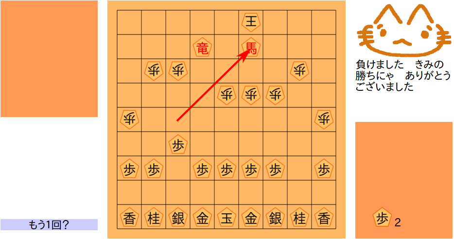
とどめです
これで勝ちです
王にうまく逃げられてしまったパターン
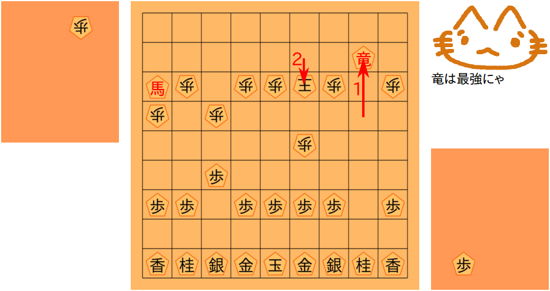
１のように竜を作ったとき
２のように王がこちら側に逃げたとします
（こちら側に逃さないのがいちばんいいのですが）
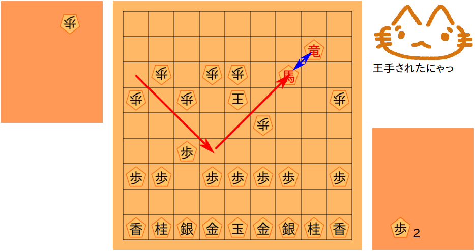
とりあえず馬を動かして青い線のように竜と隣り合わせにします
馬と竜が隣り合わせだと王はどちらも絶対に取れません
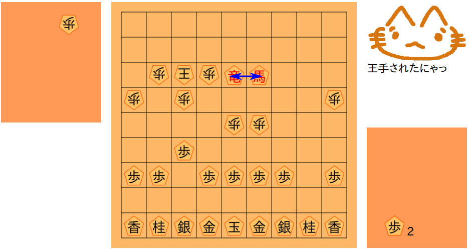
隣り合わせをたもったまま王をじわじわと追い詰めます
（かっこよく追い詰めたいところですがとりあえずは着実に攻めましょう）
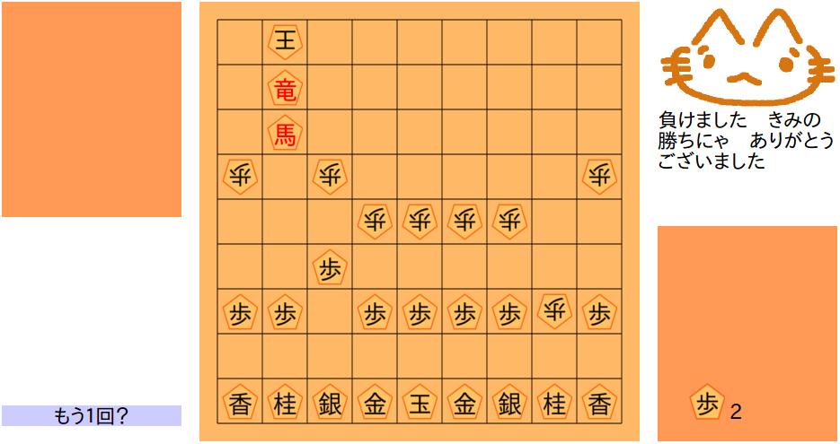
そして王を動けなくします
勝ちです
竜と馬で追い詰めれば１０枚落ちはだいたい勝てます
竜（飛車）や馬（角）を取られるときびしい戦いになります
もどる